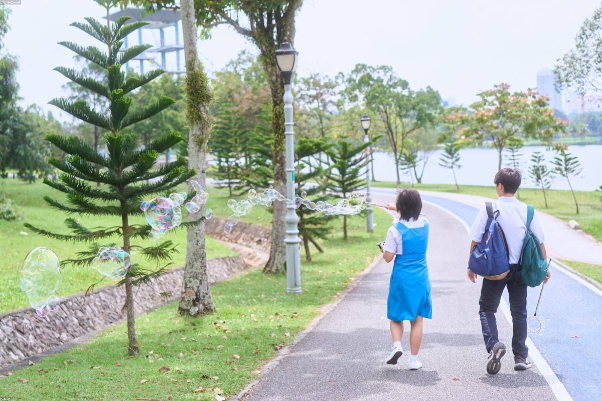
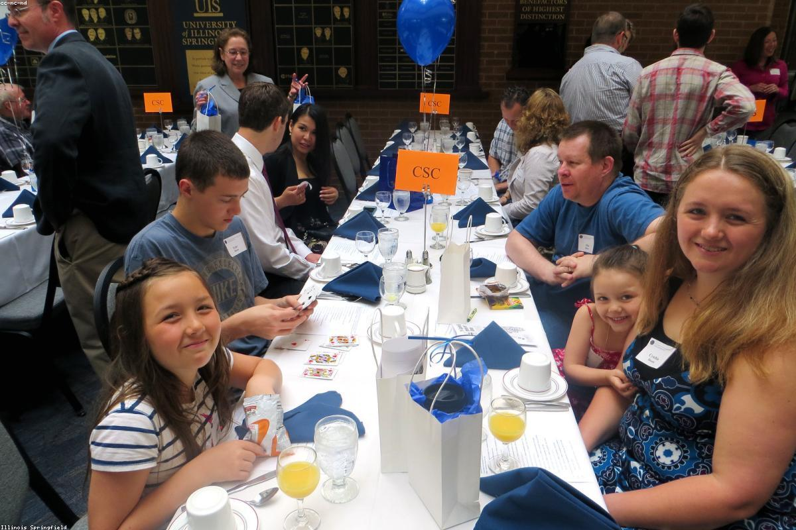
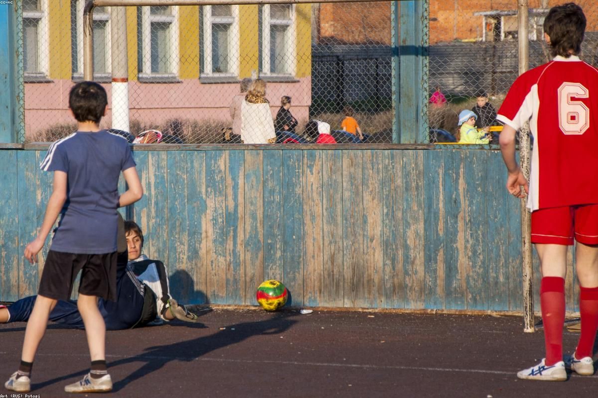
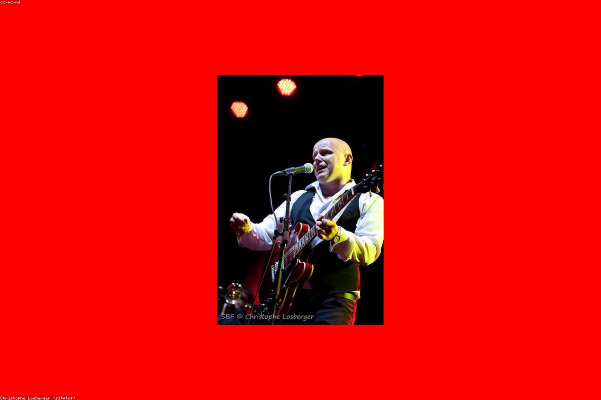

Leonardo
Gasparrini
Studente di Informatica — IIS "Marconi Pieralisi", Jesi
Cinque anni di scuola, le cose che mi appassionano, qualche progetto: ecco quello che ho da raccontare.

Una persona curiosa,
un futuro da costruire
Ho 18 anni e vivo a Belvedere Ostrense, un piccolo comune della provincia di Ancona dove si conoscono tutti quanti. Sono una persona curiosa e competente: amo capire come funzionano i calcolatori ed è questa curiosità che, dalle scuole medie in poi, mi ha portato verso l'informatica e che oggi mi fa immaginare un futuro nel quale costruire tecnologie utili alle persone. Famiglia, amici di sempre e i compagni di classe che ho conosciuto in questi cinque anni sono la parte che, di tutto, conta di più.
Il mio percorso di studi
Ho frequentato la scuola primaria e media nel mio paese, poi ho scelto l'IIS "Marconi Pieralisi" di Jesi perché sentivo già da tempo l'interesse per il mondo digitale e volevo una scuola che mi desse competenze pratiche oltre alla preparazione teorica. Nel triennio ho approfondito programmazione, basi di dati, reti e progettazione software, scoprendo aree che mi affascinano in modo particolare come le reti informatiche e la programmazione software. Mi piace affrontare le sfide scolastiche con impegno e, dopo il diploma, vorrei iscrivermi al corso di laurea in Ingegneria Informatica all'Università Politecnica delle Marche.

Uno sguardo al futuro
Guardando avanti so che ci sono ancora tante cose da imparare. Sono motivato ad affrontare le sfide universitarie e professionali che verranno e mi piacerebbe lavorare, un giorno, in un'impresa che lavori con la progettazione di rete di sistemi informatici, possibilmente nel mio territorio. Penso che le Marche, e in particolare la zona di Jesi, offrano oggi realtà industriali molto stimolanti per chi vuole unire tecnologia e innovazione.

Quello che mi racconta
fuori dall'aula
La scuola occupa una parte importante delle mie giornate, ma non è tutto. Ci sono alcune cose che, fuori dall'aula, mi raccontano meglio di qualsiasi voto.

Sport — Calcio
Ho praticato calcio dall'età di 5 anni fino a pochi anni fa, giocando per molto tempo in una squadra del paese. Questa esperienza mi ha insegnato il valore del lavoro di squadra, della disciplina e della costanza, oltre alla capacità di gestire sia le vittorie sia le difficoltà con rispetto verso compagni e avversari. Oggi continuo a coltivare la passione per lo sport andando regolarmente in palestra, attività che mi aiuta a mantenere determinazione, impegno e attenzione agli obiettivi. Trovo molte analogie tra lo sport e il lavoro in un team di sviluppo software: ognuno ha un ruolo specifico, ma i risultati migliori si ottengono solo attraverso collaborazione, fiducia e coesione del gruppo.
Tecnologia
È la passione che ha guidato la mia scelta della scuola e quella che continua ancora oggi a portarmi via più ore del previsto. Mi piace assemblare PC, seguire canali divulgativi su YouTube dedicati alla sicurezza informatica e allo sviluppo software, oltre a tenermi aggiornato sulle nuove tecnologie. Nel tempo libero mi piace anche giocare ai videogiochi, un interesse che mi ha avvicinato ancora di più al mondo dell'informatica e della tecnologia.

Amici
Mi piace passare il tempo con i miei amici d'infanzia, con cui condivido molti dei ricordi e delle esperienze più importanti della mia crescita. Anche le amicizie nate a scuola hanno avuto un ruolo fondamentale nel mio percorso, sia dal punto di vista personale sia umano. Confrontarmi ogni giorno con persone diverse mi ha insegnato il valore dell'ascolto, della collaborazione e della condivisione, aspetti che considero importanti anche nel lavoro di squadra e nelle relazioni quotidiane.